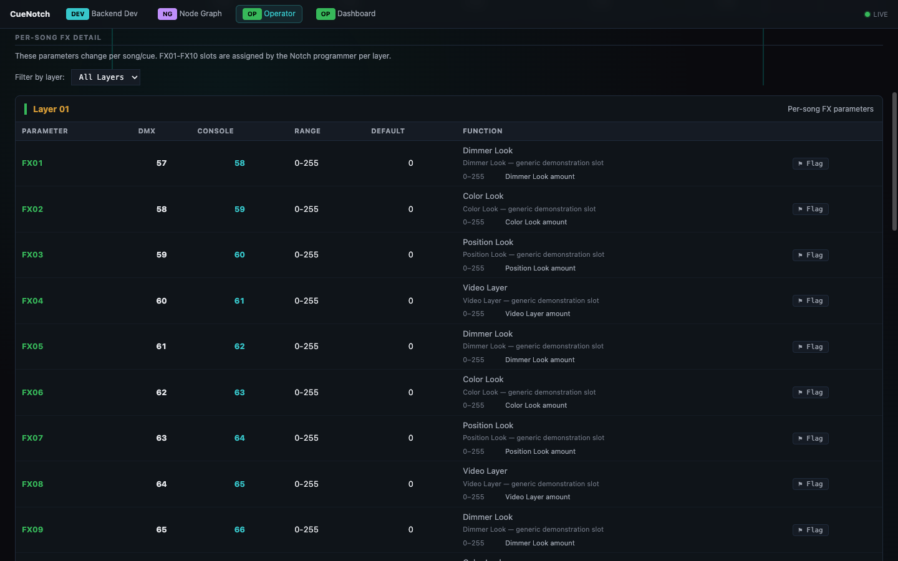

![The CueNotch director sheet for song one of a synthetic three-song validation show, headed Private Validation and Not Publicly Released: a quad-pack mode tag with the song's framing and mapping named beside it, a quad source card drawing the two-by-two routing as inputs one to four in four colours, a quad overlay card showing the 1920 by 1080 screen panels laid over each quadrant of that source, and a physical arrangement row redrawing screen left, screen centre and screen right at true aspect with their input and resolution labels.](images/app-screenshots/cuenotch/director-sheet-quad-routing.webp)
Job — give the desk operator the channels
Every FX slot named, layer by layer
The operator sheet lists the per-song FX parameters the way the desk needs them: slot, DMX channel, console channel, range, default and what the slot actually does. These are the parameters that change song to song, and the sheet says so at the top rather than leaving the operator to find out during the set.
- FX slots resolved to both their DMX channel and the console channel
- Range and default printed beside every parameter
- Layer filter, because the same slot number means different things per layer
- Per-parameter flagging, so a wrong entry is marked where it was found
Boundary CueNotch documents and generates. It does not drive DMX or control a show.

Operator Sheet — the desk reference. Generated from the block, with slot, DMX channel, console channel, range, default and function on one line — the table that otherwise gets retyped by hand before every show. The parameters shown are synthetic slots from the validation block.
![The CueNotch Live Sheet for a synthetic validation block reporting three layers, twenty-four parameters and twenty-four exported: a DMX usage channel map covering channels zero to ninety-five as a grid of named tiles for opacity, scale, position, FX slots, colour, blend, brightness, contrast, frame, background, invert, strobe and input parameters, a filter row with block, unused and all views and a hide-unexported toggle reading twenty-four of one hundred and twenty-eight, and a parameter table listing each name against its DMX channel, console channel, zero to 255 range, default and eight-bit depth, beside a left rail showing the block file, its layer and parameter counts, a stopped live server with start and stop controls, and export controls for CSV, MA3, PDF, HTML and layer PDF.](images/app-screenshots/cuenotch/live-sheet-dmx-map.webp)